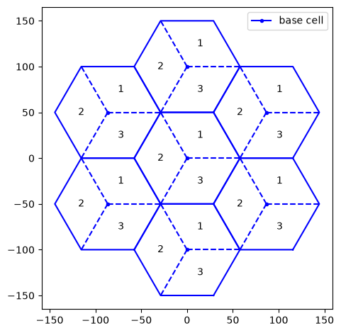
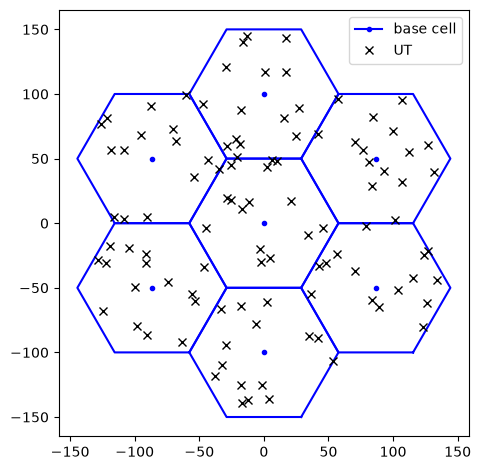
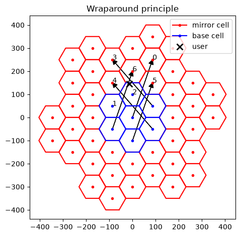
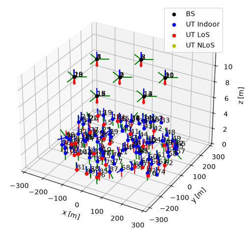
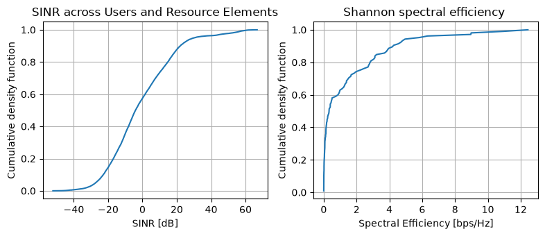

Hexagonal Grid Topology#
In this notebook, we illustrate how to build a multicell topology for system-level simulation purposes and compute the SINR distribution across the users.
More specifically, we show how to:
Place base stations on a hexagonal grid under the wraparound principle to reduce boundary effects;
Ensure that the topology generation is 3GPP compliant;
Drop users uniformly in each sector;
Compute post-equalization signal-to-interference-plus-noise ratio (SINR) for a given set of channel matrices.
Imports#
We start by importing Sionna and the relevant external libraries:
[1]:
# Import Sionna
try:
import sionna
except ImportError as e:
import os
import sys
if 'google.colab' in sys.modules:
# Install Sionna in Google Colab
print("Installing Sionna and restarting the runtime. Please run the cell again.")
os.system("pip install sionna")
os.kill(os.getpid(), 5)
else:
raise e
import torch
[2]:
# Additional external libraries
import numpy as np
import matplotlib.pyplot as plt
# Sionna components
from sionna.phy.utils import flatten_dims, sample_bernoulli
from sionna.phy.utils import dbm_to_watt
from sionna.phy.constants import BOLTZMANN_CONSTANT
from sionna.phy.channel import GenerateOFDMChannel
from sionna.phy.ofdm import ResourceGrid, RZFPrecodedChannel, EyePrecodedChannel, LMMSEPostEqualizationSINR
from sionna.phy.channel.tr38901 import UMi, UMa, RMa, PanelArray
from sionna.phy.mimo import StreamManagement
from sionna.sys import HexGrid, gen_hexgrid_topology
from sionna.sys.utils import spread_across_subcarriers
# Internal computational precision
sionna.phy.config.precision = 'single' # 'single' or 'double'
# Set random seed for reproducibility
sionna.phy.config.seed = 45
Generate a multicell topology#
In system-level simulations with 3GPP channel modeling, it is customary to place cells uniformly in space on a so-called spiral hexagonal grid.
The main parameters defining the hexagonal grid are:
Inter-site distance, determining the distance between any two adjacent hexagonal cell centers;
Number of rings of the grid, typically 1 or 2 (corresponding to 7 and 19 hexagons, respectively).
[3]:
# Inter-site distance, i.e.,
# distance between the centers of two adjacent hexagons
isd = 100 # [m]
# Number of rings (typically, 1 or 2)
num_rings = 1
# Cell height
cell_height = 10 # [m]
grid = HexGrid(isd=isd,
num_rings=num_rings,
cell_height=cell_height)
print(f'Cell center locations (X,Y,Z) [m]:\n{grid.cell_loc.cpu().numpy()}')
fig = grid.show(show_sectors=True)
Cell center locations (X,Y,Z) [m]:
[[ 0. 0. 10. ]
[ -86.60254 50. 10. ]
[ 0. 100. 10. ]
[ 86.60254 50. 10. ]
[ 86.60254 -50. 10. ]
[ 0. -100. 10. ]
[ -86.60254 -50. 10. ]]

Drop users#
After defining the hexagonal grid, we distribute users uniformly at random within each sector.
We can control the number of users per sector, their minimum and maximum distance from the nearest cell center, and their height.
[4]:
batch_size = 1
# N. users per sector
num_ut_per_sector = 5
# Min/max distance between a user and the nearest cell center
min_bs_ut_dist = 0
max_bs_ut_dist = None # If None, users can be anywhere in the sector
# Min/max user height
min_ut_height = 1.5
max_ut_height = 2
# Drop users uniformly within each sector
ut_loc, mirrors_per_ut_loc, wraparound_dist = \
grid(batch_size,
num_ut_per_sector,
min_bs_ut_dist,
max_bs_ut_dist=max_bs_ut_dist,
min_ut_height=min_ut_height,
max_ut_height=max_ut_height)
print(f'{ut_loc.shape = }')
# [batch_size, num_cells, num_sectors=3, num_ut_per_sector, 3]
print(f'{mirrors_per_ut_loc.shape = }')
# [batch_size, num_cells, num_sectors=3, num_ut_per_sector, num_cells, 3]
ut_loc = flatten_dims(ut_loc, num_dims=3, axis=1)
fig = grid.show()
ax = fig.get_axes()[0]
ax.plot(ut_loc[0, :, 0].cpu(), ut_loc[0, :, 1].cpu(), 'xk', label='UT')
ax.legend()
plt.show()
ut_loc.shape = torch.Size([1, 7, 3, 5, 3])
mirrors_per_ut_loc.shape = torch.Size([1, 7, 3, 5, 7, 3])

Wraparound distance#
Regardless of the grid size, the users at the edge of the grid experience reduced interference.
To eliminate border effects, the wraparound technique is commonly used. It involves:
Creating 6 virtual copies of the “base” grid, called “mirrors”, around the base grid;
Artificially translating, for each user, the position of a cell to the closest corresponding “mirror” image in a neighboring hexagon.
[5]:
fig = grid.show(show_mirrors=True)
ax = fig.gca()
batch = 0
ut = 30
# Plot mirror cells
ax.plot(*ut_loc[batch, ut, :2].cpu(), 'xk',
markersize=8, markeredgewidth=2, label='user')
mirrors_per_ut_loc = flatten_dims(mirrors_per_ut_loc, num_dims=3, axis=1)
mirrors_per_ut_xy_loc = mirrors_per_ut_loc[batch, ut, :, :2].cpu()
for cell in range(mirrors_per_ut_xy_loc.shape[0]):
# Show the cell ID
ax.text(*mirrors_per_ut_xy_loc[cell, :2], str(cell))
# Show the translation (if any) from base to mirror cell
if np.linalg.norm(grid.cell_loc[cell, :2].cpu() - mirrors_per_ut_xy_loc[cell, :2]) > .1:
ax.arrow(*grid.cell_loc[cell, :2].cpu(),
*(mirrors_per_ut_xy_loc[cell, :2] - grid.cell_loc[cell, :2].cpu()),
head_length=20,
head_width=20,
length_includes_head=True,
fc='black')
ax.set_title('Wraparound principle')
ax.legend()
fig.tight_layout()
plt.show()

In the figure above, the arrows denote the translation (if any) of “base” cells to the artificial, “mirror” ones.
One can modify the user index ut to assess how different user positions correspond to different wraparound configurations.
Set up a 3GPP multicell scenario#
[6]:
scenario = 'umi' # 'umi, 'uma', or 'rma'
# Generate the spiral hexagonal grid topology
topology = gen_hexgrid_topology(batch_size=batch_size,
num_rings=num_rings,
num_ut_per_sector=num_ut_per_sector,
min_bs_ut_dist=min_bs_ut_dist,
max_bs_ut_dist=max_bs_ut_dist,
scenario=scenario,
los=True)
ut_loc, bs_loc, ut_orientations, bs_orientations, \
ut_velocities, in_state, los, bs_virtual_loc = topology
num_bs = bs_loc.shape[1]
num_ut = ut_loc.shape[1]
Per-stream SINR computation#
We next illustrate the functionality enabling the computation of the per-stream, post-equalization signal-to-interference-plus-noise ratio (SINR).
It is assumed that
Linear precoding is used at the transmitter;
Linear equalization is used at the receiver;
The receiver (but not necessarily the transmitter) has perfect knowledge of the equalized channel.
The knowledge of the SINR is useful for two main reasons:
SINR enables the computation of Shannon capacity, for a rapid evaluation of the network’s performance;
SINR is used by the PHY abstraction module to bypass physical layer computations, as we will see later on.
We will compute the SINR in a multi-cell MIMO scenario with 3GPP-compliant stochastic channel models and OFDM waveforms.
Simulation parameters#
[7]:
carrier_frequency = 3.5e9 # [Hz]
# Time/frequency resource grid
# N. OFDM symbols in a slot
num_ofdm_sym = 10
sampling_frequency = 1e-3 / num_ofdm_sym
num_subcarriers = 32
subcarrier_spacing = 15e3 # [Hz]
# Base station and user terminal transmit power
bs_power_dbm = 56 # [dBm]
ut_power_dbm = 13 # [dBm]
direction = 'uplink' # 'downlink' or 'uplink'
# Environment temperature
temperature = 294 # [K]
# 3GPP scenario parameters
# Outdoor-to-indoor pathloss model
o2i_model = 'low' # 'low' or 'high'
# Parameters pnly relevant for RMa
average_street_width = 20.
average_building_height = 10.
assert direction in ['uplink', 'downlink']
assert o2i_model in ['low', 'high']
[8]:
if direction == 'downlink':
num_rx, num_tx = num_ut, num_bs
else:
num_rx, num_tx = num_bs, num_ut
# Convert power to W
ut_power = dbm_to_watt(ut_power_dbm) # [W]
bs_power = dbm_to_watt(bs_power_dbm) # [W]
# Noise power per subcarrier
no = BOLTZMANN_CONSTANT * temperature * subcarrier_spacing
Set the antenna patterns#
We set the antenna patterns for base stations and user terminals.
Note that the base stations must have a sufficient number of antennas to serve all connected users simultaneously.
[9]:
# Create antenna arrays
bs_array = PanelArray(num_rows_per_panel=3,
num_cols_per_panel=2,
polarization='dual',
polarization_type='VH',
antenna_pattern='38.901',
carrier_frequency=carrier_frequency)
ut_array = PanelArray(num_rows_per_panel=1,
num_cols_per_panel=1,
polarization='dual',
polarization_type='VH',
antenna_pattern='omni',
carrier_frequency=carrier_frequency)
num_ut_ant = ut_array.num_ant
num_bs_ant = bs_array.num_ant
Create a 3GPP channel model#
[10]:
# Create channel model
if scenario == 'umi': # Urban micro-cell
channel_model = UMi(carrier_frequency=carrier_frequency,
o2i_model=o2i_model,
ut_array=ut_array,
bs_array=bs_array,
direction=direction,
enable_pathloss=True,
enable_shadow_fading=True)
elif scenario == 'uma': # Urban macro-cell
channel_model = UMa(carrier_frequency=carrier_frequency,
o2i_model=o2i_model,
ut_array=ut_array,
bs_array=bs_array,
direction=direction,
enable_pathloss=True,
enable_shadow_fading=True)
elif scenario == 'rma': # Rural macro-cell
channel_model = RMa(carrier_frequency=carrier_frequency,
ut_array=ut_array,
bs_array=bs_array,
direction=direction,
average_street_width=average_street_width,
average_building_height=average_building_height,
enable_pathloss=True,
enable_shadow_fading=True)
We now apply the multicell topology to the specified channel model.
[11]:
channel_model.set_topology(*topology)
channel_model.show_topology()

Generate OFDM channel matrices#
After creating the channel model, we will
Generate the channel impulse response (CIR) for each pair of transmit and receive antennas;
Convert the CIRs to OFDM channel matrices, for each transmitter/receiver pair.
These two steps are handled by the GenerateOFDMChannel object.
[12]:
# Set n. streams per user = n. antennas
num_streams_per_ut = num_ut_ant
# Set up the OFDM resource grid
resource_grid = ResourceGrid(num_ofdm_symbols=num_ofdm_sym,
fft_size=num_subcarriers,
subcarrier_spacing=subcarrier_spacing,
num_tx=num_ut_per_sector,
num_streams_per_tx=num_streams_per_ut)
# Instantiate the OFDM channel generator
ofdm_channel = GenerateOFDMChannel(channel_model, resource_grid)
# Generate the OFDM channel matrix
# [batch_size, num_rx, num_rx_ant, num_tx, num_tx_ant, num_ofdm_symbols, num_subcarriers]
h_freq = ofdm_channel(batch_size)
assert num_streams_per_ut <= num_ut_ant, \
"The # of streams per user must not exceed the # of its antennas"
Stream management#
We now associate each receiver to the corresponding serving transmitter, via a StreamManagement object.
[13]:
# For simplicity, each user is served by its closest base station
if direction == 'downlink':
num_streams_per_tx = num_streams_per_ut * num_ut_per_sector
# RX-TX association matrix
rx_tx_association = np.zeros([num_rx, num_tx])
idx = np.array([[i1, i2] for i2 in range(num_tx) for i1 in
np.arange(i2*num_ut_per_sector, (i2+1)*num_ut_per_sector)])
rx_tx_association[idx[:, 0], idx[:, 1]] = 1
else:
num_streams_per_tx = num_streams_per_ut
# RX-TX association matrix
rx_tx_association = np.zeros([num_rx, num_tx])
idx = np.array([[i1, i2] for i1 in range(num_rx) for i2 in
np.arange(i1*num_ut_per_sector, (i1+1)*num_ut_per_sector)])
rx_tx_association[idx[:, 0], idx[:, 1]] = 1
# Instantiate a Stream Management object
stream_management = StreamManagement(rx_tx_association, num_streams_per_tx)
Compute SINR#
We are finally ready to compute the post-equalization SINR on a per-stream basis.
[14]:
# User streams are allocated randomly across subcarriers
# Uniform power allocation
# [batch_size, num_ofdm_sym, num_subcarriers, num_tx, num_streams_per_tx]
is_scheduled = sample_bernoulli([batch_size,
num_ofdm_sym,
num_subcarriers,
num_ut,
num_streams_per_ut],
p=.3)
tx_power_per_ut = ut_power if direction == 'uplink' else bs_power / num_ut_per_sector
tx_power_per_ut = torch.full([batch_size, num_ofdm_sym, num_ut], tx_power_per_ut,
device=sionna.phy.config.device)
# [batch_size, num_tx, num_streams_per_tx, num_ofdm_sym, num_subcarriers]
tx_power = spread_across_subcarriers(tx_power_per_ut,
is_scheduled,
num_tx=num_tx)
if direction == 'downlink':
precoded_channel = RZFPrecodedChannel(resource_grid=resource_grid,
stream_management=stream_management)
h_eff = precoded_channel(h_freq, tx_power=tx_power, alpha=no)
else:
# No precoding in the uplink
precoded_channel = EyePrecodedChannel(resource_grid=resource_grid,
stream_management=stream_management)
h_eff = precoded_channel(h_freq, tx_power=tx_power)
lmmse_posteq_sinr = LMMSEPostEqualizationSINR(resource_grid=resource_grid,
stream_management=stream_management)
# [batch_size, num_ofdm_symbols, num_subcarriers, num_rx, num_streams_per_rx]
sinr = lmmse_posteq_sinr(h_eff, no=no, interference_whitening=True)
# [batch_size, num_ofdm_symbols, num_subcarriers, num_ut, num_streams_per_ut]
sinr = torch.reshape(sinr,
sinr.shape[:-2] + (num_bs*num_ut_per_sector, num_streams_per_ut))
print(f'{sinr.shape = }')
sinr.shape = torch.Size([1, 10, 32, 105, 2])
It is immediate to compute the associated Shannon capacity.
[15]:
# Compute maximum achievable spectral efficiency (SE) per resource element
# [batch_size, num_ofdm_sym, num_subcarriers, num_ut]
se_shannon = torch.sum(torch.log2(1 + sinr), axis=-1)
# Average across resource elements for each user
# [batch_size, num_ut]
se_shannon = torch.mean(se_shannon, axis=[-2, -3])
We now visualize the produced SINR and the spectral efficiency distribution across users.
[16]:
def get_cdf(values):
"""
Computes the Cumulative Distribution Function (CDF) of the input vector
"""
values = values.cpu().numpy().flatten()
n = len(values)
sorted_val = np.sort(values)
cumulative_prob = np.arange(1, n+1) / n
return sorted_val, cumulative_prob
# Plot SINR
fig, ax = plt.subplots(1, 2, figsize=(8, 3.5))
ax[0].plot(*get_cdf(10*torch.log10(sinr[sinr > 0])))
ax[0].set_xlabel('SINR [dB]')
ax[0].set_ylabel('Cumulative density function')
ax[0].set_title('SINR across Users and Resource Elements')
ax[0].grid()
# Plot SE
ax[1].plot(*get_cdf(se_shannon))
ax[1].grid()
ax[1].set_title('Shannon spectral efficiency ')
ax[1].set_ylabel('Cumulative density function')
ax[1].set_xlabel('Spectral Efficiency [bps/Hz]')
fig.tight_layout()
plt.show()

Differentiability#
[17]:
# Transmit power value at which the gradient is computed
tx_power_re = torch.ones([batch_size, num_tx, num_streams_per_tx, num_ofdm_sym, num_subcarriers],
device=sionna.phy.config.device, requires_grad=True)
# Forward pass with gradient tracking
if direction == 'downlink':
precoded_channel = RZFPrecodedChannel(resource_grid=resource_grid,
stream_management=stream_management)
h_eff = precoded_channel(h_freq, tx_power=tx_power_re, alpha=no)
else:
precoded_channel = EyePrecodedChannel(resource_grid=resource_grid,
stream_management=stream_management)
h_eff = precoded_channel(h_freq, tx_power=tx_power_re)
lmmse_posteq_sinr = LMMSEPostEqualizationSINR(resource_grid=resource_grid,
stream_management=stream_management)
# [batch_size, num_ofdm_symbols, num_effective_subcarriers, num_rx, num_streams_per_rx]
sinr = lmmse_posteq_sinr(h_eff, no=no, interference_whitening=True)
# Per-stream Shannon capacity
capacity_re = torch.log2(1 + sinr)
# Average capacity across users and resources
capacity_re_avg = torch.mean(capacity_re)
print(f'{tx_power_re.shape = }')
# [batch_size, num_tx, num_streams_per_tx, num_ofdm_sym, num_subcarriers]
# Compute Gradient d(capacity_re_avg)/d(tx_power_i), for all i
capacity_re_avg.backward()
d_capacity_d_tx_power = tx_power_re.grad.cpu().numpy()
print(f'{d_capacity_d_tx_power.shape = }')
# [batch_size, num_tx, num_streams_per_tx, num_ofdm_sym, num_subcarriers]
tx_power_re.shape = torch.Size([1, 105, 2, 10, 32])
d_capacity_d_tx_power.shape = (1, 105, 2, 10, 32)
Conclusions#
Once users are placed in the network, the SINR and the associated Shannon capacity can be computed, providing an upper bound for the achievable spectral efficiency.
Evaluating the actual spectral efficiency would ideally require simulating the entire physical layer (PHY) chain, including modulation, coding, demodulation, and decoding.
As a computationally cheaper alternative, one can bypass the PHY chain via the PHYAbstraction functionality, as shown in the physical layer abstraction notebook.